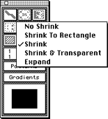
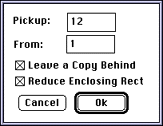
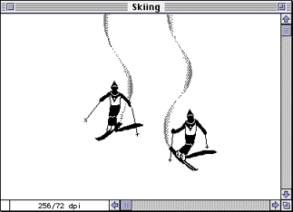

3DO Animator lets you take an animated selection from an animation and
turn it into an animated brush. In effect, you can use the selection as
animated clip art.
The Pickup Selection feature lets you create an animated selection. Pickup
Selection works like a cookie cutter: The animation is the dough and the
animation selection is the cookie. It's as if the 12 frames of the
animation were sitting on a table, one on top of the other, and you cut
through all 12 with a cookie cutter. What you cut out is the Anim
Selection.
How to create an animated selection from the Skiing file
To create an animated selection of the skier, follow these steps:
Choose the Rectangle Selection tool.
Set the Shrink/Expand modifier to Shrink, as shown in Figure 2.

Figure 2: Pop-up menu for setting the Shrink/Expand modifier.
Surround the skier (including the "wake" in the snow) with the
Rectangle Selection tool.
The Marquee indicates the area you've selected. You can treat this
selection like any other; for example, you can drag it to another part of
the screen or make a copy of it.
You can also pick up the selection as it looks in each frame of the
animation.
From the Anim menu, choose Anim Selection, then Pickup Selection.
The Pickup Selection dialog appears.
The Pickup box has the number 12 in it, which means that 3DO Animator
will pick up all of the selected parts (the skier and the trail she makes
in the snow) from the 12 frames that make up the animation.
The From box has 1 in it, which means the program will begin to pick
up the 12 frames on frame number 1.

Figure 3: Pickup Selection dialog.
For this example make sure the Leave a Copy Behind box is checked and
choose OK.
The skier begins to move through all the motions that make up the
selection while 3DO Animator picks up all the frames. When the pickup is
complete you're back at frame 1. You might notice that the selection
Marquee looks a little different. The reason is that the copy of the skier
Pickup Selection created by is sitting right on top of the original. The
program uses the different Marquee to distinguish selections it picked up
from other selections.
Looking at the animated selection
To look at the twelve frames of the animated selection you just made,
follow these steps:
Press and hold down the Option key and drag the copy of the skier to
the left. This skier (Skier 2) is now selected.
Press Command - 8 to move the selection forward one frame.
Press and hold Command - 8 to see all 12 frames. If you want to move
backward one frame, press Command - 7.
This section illustrates how turn the selection into an animated brush,
like the bird in an earlier section, and how to paint with that brush.
Note: You have to complete the steps in the previous two sections
to work through this section.
To turn the animated selection of the skier into an animated brush and
paint with it, follow these steps:
Press Command - 1 to go to frame 1.
Press Command - B to turn the copy of the animated selection (that is,
Skier 2) into an animated brush.
You are now ready to paint with the animated brush.
Move Skier 2 above the original animated selection.
Hold down the backquote key and the mouse button. 3DO Animator flips
through the frames while the animated brush changes at each frame.
Watch the frame counter and release the backquote key and mouse button
when you are at the last frame.

Figure 4: An animation using an animated brush.
At this point you can experiment with the animation: create other skiers,
create other movements for them, etc. Exploring the program's
possibilities will give you good ideas for your own animations.